VR 所需，一影俱全。
一个免费的 Windows 应用，包办你的整场 VR 体验：HaritoraX 与 SlimeVR 兼容追踪器的全身追踪、显示音乐和心率的 VRChat 聊天框、崩溃模型防护，还有手腕上的面板。
全身追踪，如影随形。
Ombra 独立在 SteamVR 中驱动 HaritoraX 和 SlimeVR 兼容追踪器，无需 VR Manager 或 SlimeVR Server。它根据传感器和头显构建出你的身体，让每个追踪器都稳定、跟手、不漂移。
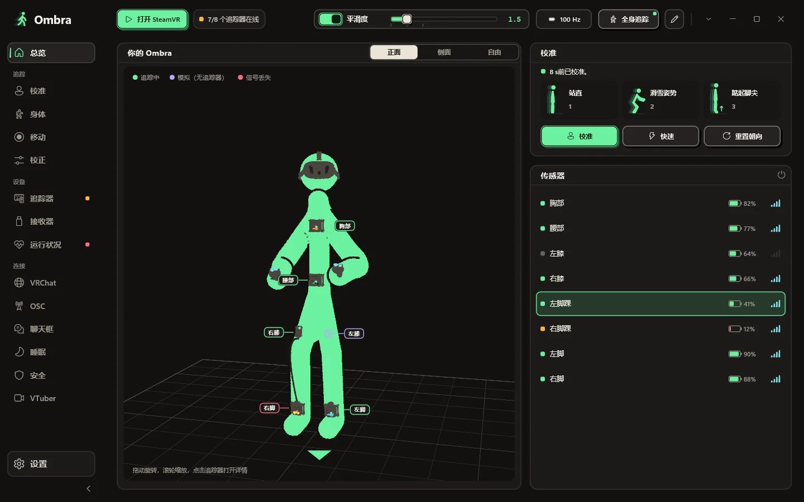
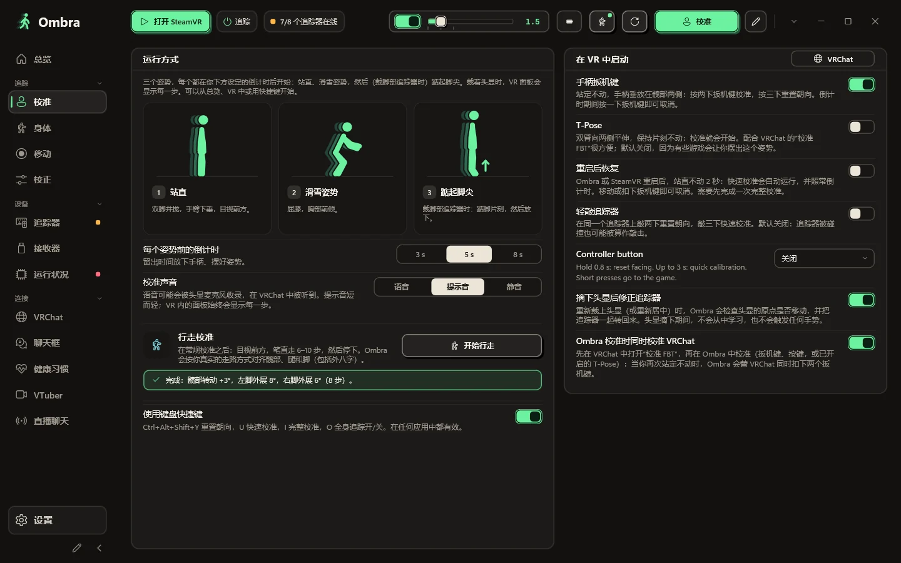
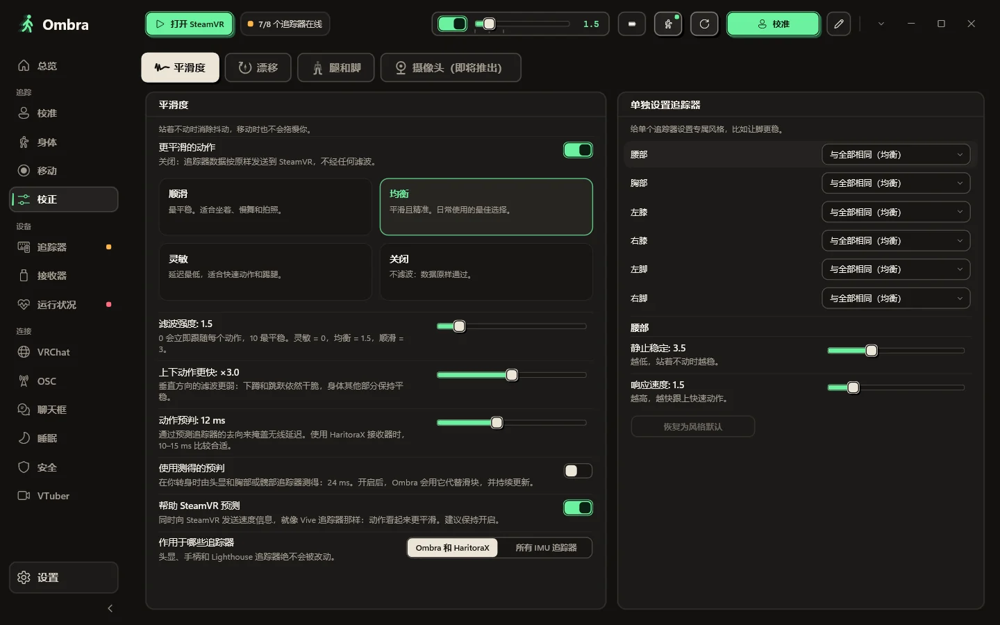
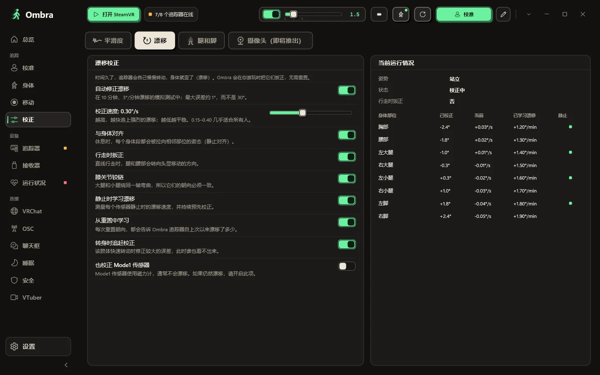
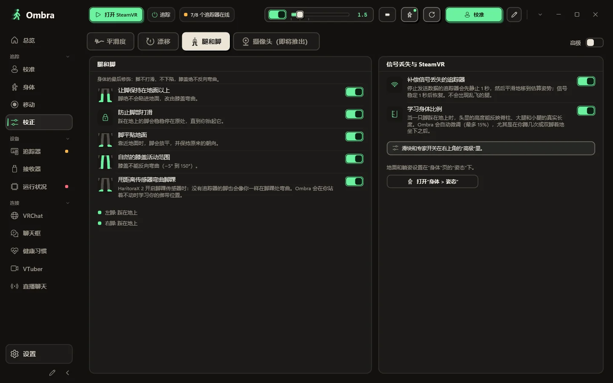
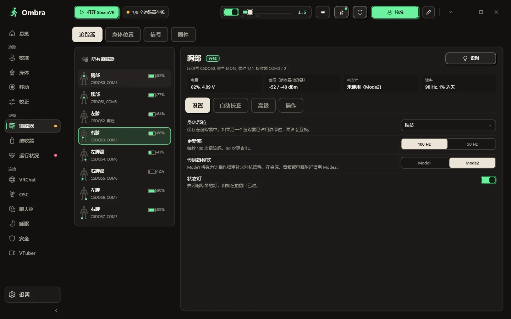
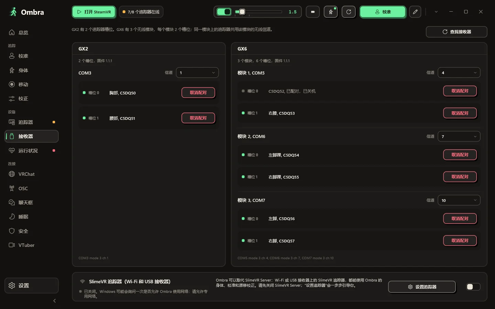
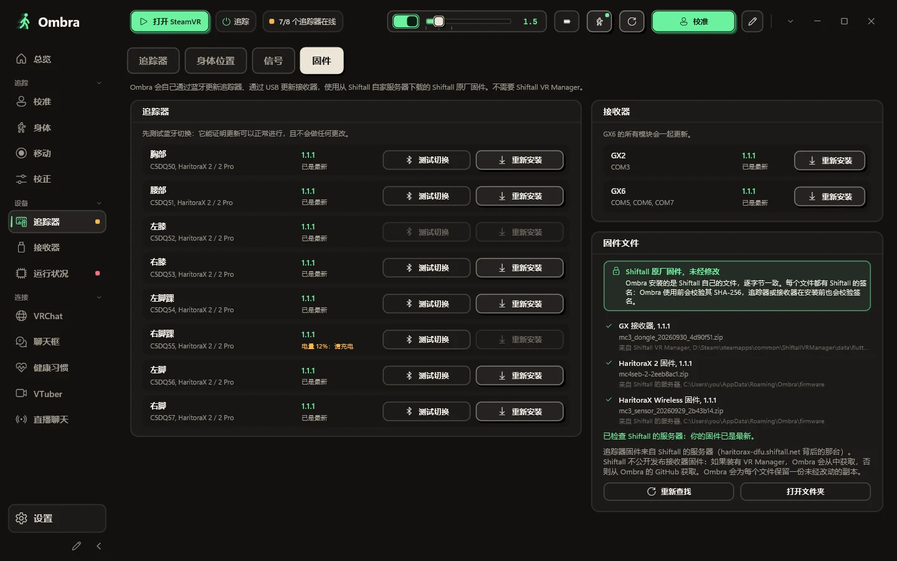
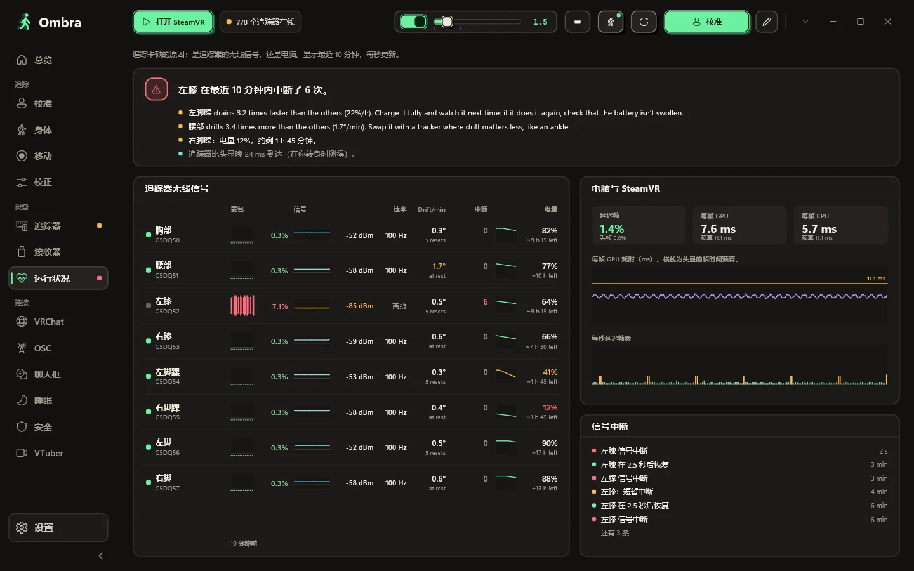
实时查看你的身体
Ombra 根据传感器和头显构建出你的身体，可切换正面、侧面或自由 3D 视角。每个追踪器都会显示当前状态：正在追踪、模拟中或信号丢失。
- 每个传感器的电量、更新率和信号，一目了然
- 无需手臂追踪器，用手柄推算手肘
- 校准、快速校准和重置朝向，一键即达
三个姿势完成校准
站直，屈膝摆出滑雪姿势，戴脚部追踪器时再踮起脚尖。出了问题，Ombra 会告诉你该检查哪个身体部位。
- 可在 VR 中启动：同时扣下两个扳机键、T-Pose、轻拍追踪器，或用键盘快捷键
- 快速校准会记住每个追踪器的佩戴方式，重启后也不会忘
- 行走校准：走几步就能对齐髋部、腿和脚
- 用手柄触碰身体和地面即可测量
平滑程度随你调
顺滑、均衡、灵敏或关闭，也可用滑块设为任意强度。还能给单个追踪器设置专属风格，比如让脚更稳。
- 下蹲和跳跃依然干脆利落
- 每个姿势都带有速度信息，SteamVR 能精确预测到每一帧
- 也可按需平滑 SteamVR 中的其他 IMU 追踪器
漂移，边玩边处理
漂移校正在游戏过程中持续运行，实时表格会显示它在每个身体部位上做了什么。
- 减少重置次数，长时间游玩也一样
- 每项功能都可单独开关
- 玩得越久，效果越好
腿、脚与地面
身体姿态始终自然：脚不会陷进地面，踩稳的脚不会打滑，膝盖绝不会反向弯曲。
- 借助 HaritoraX 2 的距离传感器，脚踝也能弯曲
- 坐着和躺着：Ombra 会自己找到你身下的床、沙发或地板
- 用平滑的估算姿势弥补短暂的信号中断
- 按游戏选择 SteamVR 能看到哪些追踪器
每个追踪器，细节尽览
序列号、固件、接收器槽位、电池电压、双向信号、磁力计状态和实际更新率。
- 更改身体部位、更新率（100 或 50 Hz）和传感器模式
- 拍摄自己时可关闭状态灯
- SlimeVR 兼容追踪器，通过 Wi-Fi 或 USB 接收器连接，可用数据线设置 Wi-Fi
接收器与无线信道
GX2 有两个槽位；GX6 有三个无线模块，每个模块两个槽位。Ombra 会显示每个模块、各槽位上的追踪器及其信道。
- 无需 VR Manager 即可配对和取消配对追踪器
- 切换信道，两个模块冲突时会提醒
- 一键查找新插入的接收器
固件，同一窗口搞定
通过蓝牙更新追踪器，通过 USB 更新接收器，使用未经修改的 Shiftall 原厂固件文件。
- 先测试蓝牙切换，不会做任何更改
- 追踪器固件版本不一致时会提醒
- 每个文件使用前都会校验（SHA-256）
是无线信号的问题，还是电脑的问题？
追踪卡顿时，运行状况页会告诉你问题出在哪：每个追踪器的丢包、信号和实际更新率，旁边是 SteamVR 丢掉的帧。
- 每个追踪器最近几分钟的曲线图
- 直接给出结论，而不只是一堆数字
你的 VRChat 聊天框，带上你的音乐和心跳。
一行一行地搭建聊天框显示的内容，带实时数值。Ombra 让它保持整洁，从不刷屏。
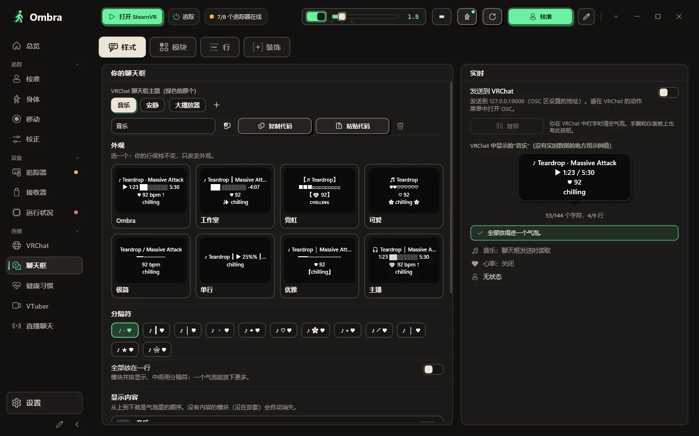
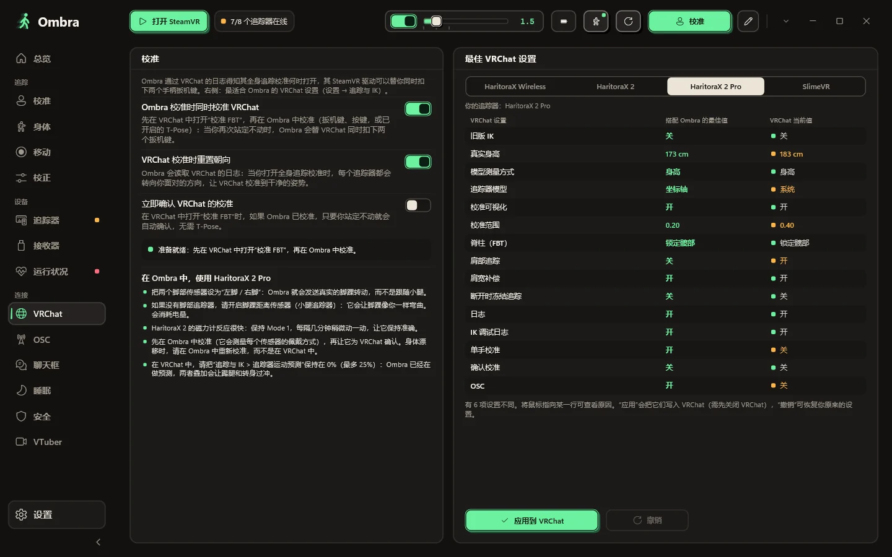
专属于你的聊天框
歌曲、心率、状态和时间各占一行：拖动排序，一键添加内容，并按 VRChat 的显示效果预览每一行。装饰和文字样式只使用 VRChat 能显示的字符。把布局保存为主题，并以代码分享。气泡放不下？它会翻页，而不是截断你的文字。
- Spotify 或任意播放器正在播放的歌曲，无需登录，还能在手腕上播放、暂停和切歌
- 心率来自 Pulsoid，或直接连接蓝牙心率带或手表，也会发送到你的模型
- 只有 Ombra 知道的状态：离开、睡着、全身追踪开启或关闭
- 仅在文字变化时发送：不刷屏，不会被聊天框限流
为 VRChat 而生
Ombra 的校准同时也会校准 VRChat；VRChat 为你的追踪器推荐的全身追踪设置，一键即可应用，也能撤销。
- 为 Quest 上的 VRChat 提供 OSC 追踪器，无需 SteamVR
- 通过 VMC 支持 VSeeFace、Warudo、VNyan 等 VTuber 软件
被崩了？Ombra 告诉你是谁干的。
VRChat 会记录谁加入了实例、加载了哪个模型。Ombra 在你的电脑上读取这份日志，所以崩溃后你能看到最可能的元凶，一键就能隐藏其模型。
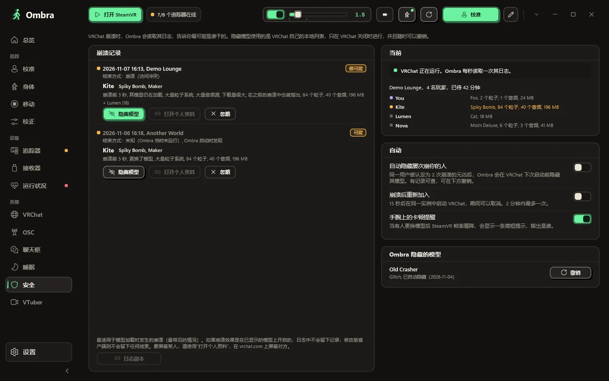
- 实例里有谁、各自用的是哪个模型、模型有多重
- 崩溃后：最可能的元凶、其模型，以及它在崩溃前多少秒加载
- 一键隐藏该模型，随时可撤销
- 有模型拖低你的帧率时，手腕上会发出提醒
- 可选：被同一个人崩了两次后自动隐藏其模型，并在可取消的倒计时后重新加入
- 绝不索要你的 VRChat 密码，也绝不触碰游戏本身
全程不用摘头显。
游戏中需要的东西，都在你的手腕上和 SteamVR 仪表板里。
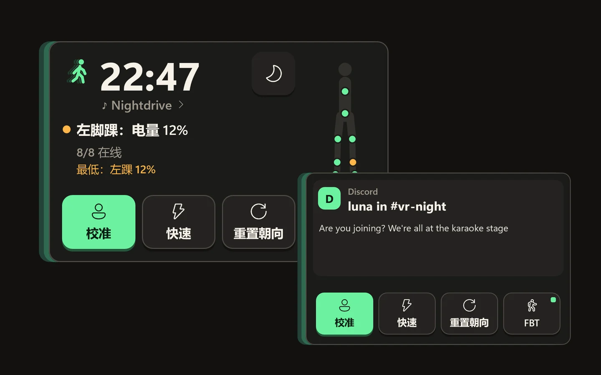
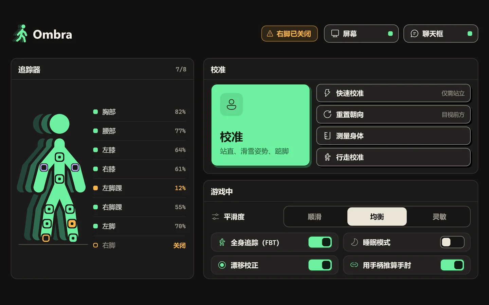
戴在手腕上的手表
抬手看一眼，它就会淡入：时间、追踪器、正在播放的歌曲、心率和电脑通知。移开视线，它就消失。
- 用另一只手轻触，即可校准、快速校准和重置朝向
- 一键开关全身追踪，恢复后无需重新校准
- 睡眠模式：睡觉时身体平稳、语音轻柔
SteamVR 仪表板里的标签页
每个追踪器及其电量、大号的校准和重置朝向按钮，以及游戏中常用的开关。
- 追踪器掉线或电量不足时，在 VR 中提醒
- 空间拖拽：按住按键拉动整个世界，还有甩出和重力
还有这些小细节。
轻量原生
内部没有浏览器，还有 12 种配色主题。SteamVR 会启动 Ombra，它在托盘里带着追踪器面板待命。
你的快捷栏
最常用的按钮，按你想要的顺序排列。
一键更新
有新版本时 Ombra 会通知你，而且绝不会在 SteamVR 运行时更新。
接着上次继续
可选：重启后，只要你站定不动，Ombra 就会自动校准。
在什么都要付费的今天 Ombra 免费，而且连你的数据都不留。
Ombra 联网时做什么、不做什么，全都列在这里。
留在你的电脑上
- 你的设置、校准数据和身体测量数据
- 崩溃报告，以及 Ombra 从 VRChat 日志中读取的内容
- 你的心率和你播放的音乐
只在以下情况联网
- 在 GitHub 上检查新版本（除非你关掉了这个功能）
- 更新时从 Shiftall 下载追踪器固件
- 连接你自己接入的服务，如 Pulsoid
完全没有
- 需要注册的账号
- Ombra 服务器
- 广告、统计分析和遥测
- 任何费用，现在没有，以后也没有
常见问题
没找到答案？到 GitHub 上提问。
还需要 Shiftall VR Manager 吗？
不需要。Ombra 自己读取接收器、配对追踪器，并使用 Shiftall 原厂文件更新固件。Ombra 运行时请关闭 VR Manager。
支持哪些追踪器和接收器？
通过 GX2 或 GX6 接收器连接的 HaritoraX 2、2 Pro 和 Wireless，以及通过 Wi-Fi 或 USB 接收器连接的 SlimeVR 兼容追踪器，例如 Butterfly 和 Smol Slime。Vive 追踪器等基站追踪器可以与 Quest 对齐，Ombra 还能平滑 SteamVR 中已有的其他 IMU 追踪器。不支持 HaritoraX 1（有线版）。
支持 Quest 吗？
支持。搭配电脑时通过 SteamVR 使用：Link、Air Link、Virtual Desktop 或 Steam Link。如果 VRChat 直接在 Quest 上运行，Ombra 会从电脑通过 OSC 发送你的身体动作，无需 SteamVR。
为什么 Windows 会对安装程序发出警告？
安装程序暂未进行代码签名，所以 SmartScreen 不认识它。点击更多信息，再点击仍要运行即可。安装程序会装到你的用户文件夹，无需管理员权限。
Ombra 在 SteamVR 中是什么样的？
安装程序会安装 Ombra 自己的 SteamVR 驱动。你的追踪器会出现在 SteamVR 中，角色已经设好（腰部、胸部、膝盖、脚部、手肘），SteamVR 还会自动为你启动 Ombra。
它会改动我的头显、手柄或基站吗？
不会。Lighthouse 设备、头显和手柄绝不会被修改。驱动只会创建 Ombra 的虚拟追踪器，并且仅在你开启该选项时，才会平滑其他 IMU 追踪器。
没有追踪器也能试用吗？
可以。运行 Ombra.exe --demo，即可在一个 GX2 和一个 GX6 上看到八个演示追踪器。演示模式绝不会触碰 COM 端口、蓝牙、SteamVR 或你的设置。
Ombra 支持哪些语言？
应用和本网站支持英语、意大利语、德语、法语、西班牙语、巴西葡萄牙语、日语、韩语、简体中文和俄语。Ombra 会跟随你的 Windows 语言，你也可以在设置中更改。
它和 Shiftall 或 Valve 有关系吗？
没有。Ombra 是独立项目，可免费下载和使用。源代码未公开；你可以在 GitHub 上提出功能、扩展和翻译建议。